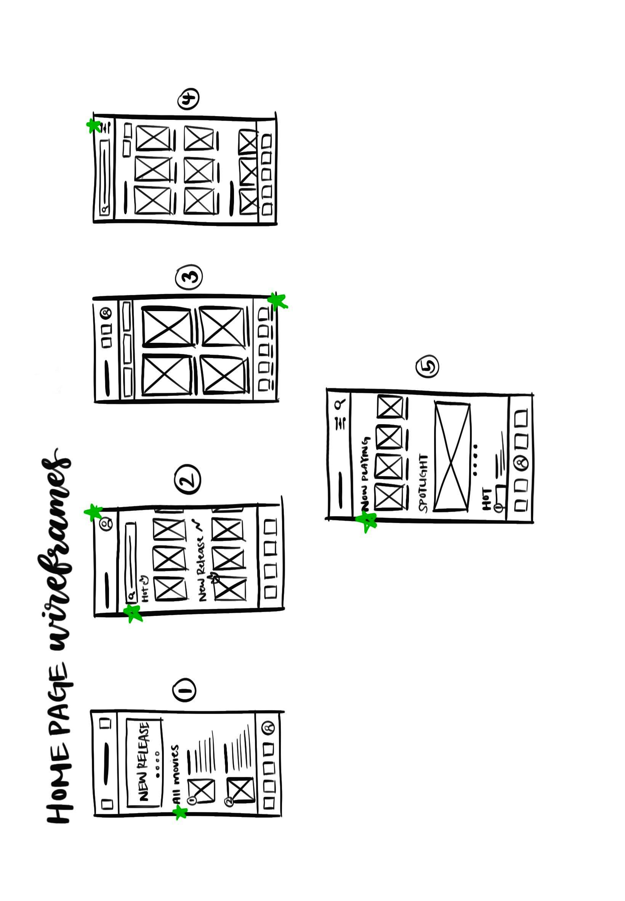

Project Overview
CineMa is a mobile ticketing app that gives movie enthusiasts a convenient and easy way to purchase and scan movie tickets. CineMa aims to ease the process of mobile ticketing overall and offer users a smooth experience.
Understanding Users
I conducted two unmoderated usability studies throughout my design process to identify user pain points. Through my research, it became evident that these pain points included: lack of language options and bundled ticket scans.
Crafting Personas
Paper to Digital
To start the design, I began by sketching paper wireframes to get a basic idea of the app before converting them onto digital platforms.

After creating these wireframes, I brought them over to Figma and made low fidelity wireframes, which I then turned into a working lo-fi prototype.

User Testing
After building the low-fidelity prototype, I moved on and conducted my first usability study, from which I gathered new insights:
Lacked language options
Users need to be able to review their ticket order
There should be the option of bundle scanning
Upon iterating on my low-fidelity prototype after the study, I created high-fidelity prototypes for my second usability study, where I gained more findings:
The user flow was missing a seat selection feature
Some gesture and touch options were not working
Movie titles should be includes in the tickets
Making Changes
After conducting both usability studies, I made some changes to my high-fidelity prototype!
1. Seat Selection
Adding seat selection is a crucial feature for users to order movie tickets, offering a convenient way to choose seats.

→

2. Language Options
Adding language options is a must to improve accessibility for many users whose preferred language is not English.

→
.png)
The Design System
Final Product
Accessibility
1. Language Options
The first step that users take in my app is to choose their preferred language. Because this is the first step, users do not have to spend extra time trying to figure out how to change languages within the app’s settings.
2. Contrasting Colors
With contrasting colors, the app is more helpful to those with visual impairments, as the high contrast will ease their ability to read the contents of the app.
3. Labels
I have put labels on the movie posters after the user purchases tickets. This allows the screen reader to detect what movie ticket the user is browsing through.
Takeaways
What I Learned:
I learned that user opinion often differs from my expectations, which made me realize the important of user feedback and research because the end product would definitely not be user centered without the research.